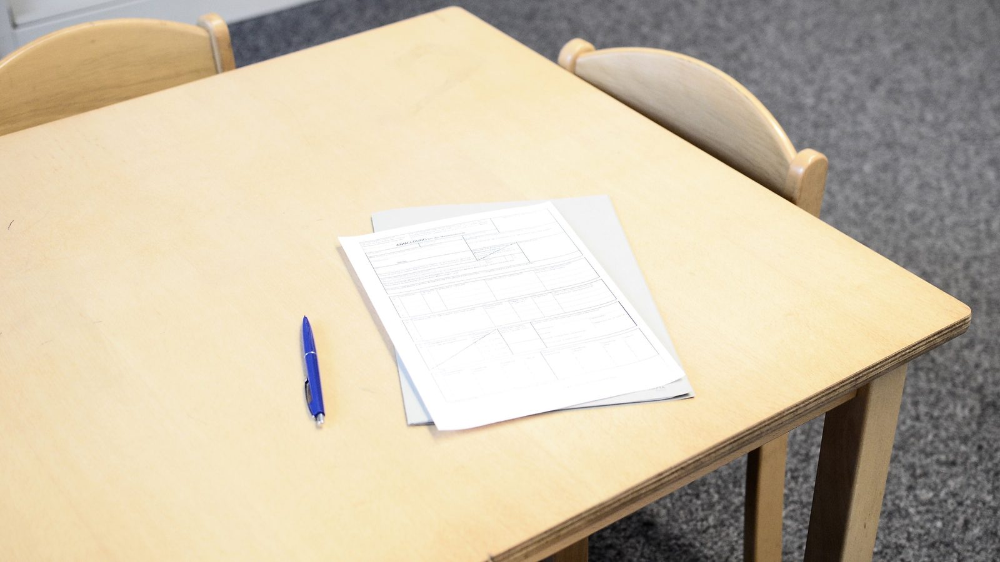

Itapema · Educação
Itapema · EducaçãoItapema não tem aula nesta sexta por um decreto de janeiro, e o calendário escolar publicado no site da Prefeitura ainda marca o dia 15
A outra vez em que o papel publicado não batia com o calendário em vigor.
O Edital SME 003/2026, publicado em 15 de outubro, marca de 4 a 6 de novembro a ida dos pais à escola para confirmar a rematrícula compartilhada do Grupo 4, do Grupo 6 e dos 1º anos. A nota que a Secretaria de Educação publicou nesta sexta diz 4 a 11 de novembro. A diferença são os dias 9, 10 e 11, que o edital reserva ao trabalho interno das escolas, não à família. Baixamos as 18 páginas do edital e conferimos linha por linha. Quem seguir a nota pode chegar à escola depois do prazo.
Em 30 segundos · Modo de Leitura, formato original Santa Informa
Itapema publicou o edital de matrícula de 2027.
É o Edital SME 003/2026.
Saiu em 15 de outubro, com 18 páginas.
A nota sobre ele saiu em 16 de outubro.
As duas peças divergem numa data.
O caso é da rematrícula compartilhada.
Ela vale para Grupo 4 e Grupo 6.
E para os 1º anos do Ensino Fundamental.
O edital diz 4 a 6 de novembro.
É quando a família vai à escola confirmar.
A nota do site diz 4 a 11 de novembro.
Os dias 9 a 11 são de trabalho interno.
Servem para levantar vaga do Fila Única.
Quem for dia 10 pode achar o prazo fechado.
Tem outra diferença, nas transferências.
São quatro dias de transferência entre CMEIs.
No edital, os quatro dias são de 2026.
Na nota, dois deles aparecem como 2023.
São os dias 18 e 19 de novembro.
Em caso de dúvida, vale o edital.
Ele é o documento oficial, a nota é aviso.
O resto do calendário bate nas duas peças.
A rematrícula geral é automática.
Vale da Educação Infantil ao 9º ano e EJA.
A escola avisa por bilhete, de 19 a 23 de outubro.
Transferência entre CMEIs: 16 a 19 de novembro.
É na Secretaria de Educação, Rua 906, nº 64.
Das 9h às 12h e das 13h às 17h.
Cada dia atende um grupo de CMEIs.
Transferência no Fundamental: 16 a 19 de novembro.
Essa é por link enviado pela escola.
Matrícula nova na Educação Infantil: dezembro.
Na primeira quinzena, para quem está no Fila Única.
Matrícula nova no Fundamental e EJA: 26/01/2027.
A chamada de intenção de vaga começa em 15/01.
Para a rematrícula, leve comprovante de residência.
E a declaração de vacinação do posto.
O comprovante tem que ser de Itapema.
E ter no máximo três meses.
Não procuramos a Secretaria para esta matéria.
Poder PúblicoPublicada em Redação Santa Informa

Os pais de Itapema têm até 6 de novembro para ir à escola confirmar a rematrícula compartilhada, e não até 11, como diz a nota que a Secretaria de Educação publicou nesta sexta. Quem manda é o Edital SME 003/2026, assinado pelo secretário Valdir Nesi Filho e publicado em 15 de outubro. Baixamos as 18 páginas e lemos o cronograma: a linha que trata da ida da família à unidade escolar diz 04/11 a 06/11/2026. Os dias 9, 10 e 11 de novembro estão na linha seguinte, e são da escola, para organizar as matrículas e levantar as vagas que vão para o Fila Única.
A rematrícula compartilhada não é para todo mundo. Ela vale para as crianças do Grupo 4, do Grupo 6 e para os 1º anos do Ensino Fundamental, que são as etapas em que a criança costuma mudar de unidade. Para o restante da rede, da Educação Infantil ao 9º ano e na EJA, a rematrícula é automática, e a escola avisa as famílias por bilhete entre 19 e 23 de outubro. Mesmo na automática, o edital pede atualização cadastral com comprovante de residência de Itapema, de no máximo três meses, e declaração de vacinação emitida pelo posto de saúde.
A transferência entre CMEIs acontece na Secretaria de Educação, na Rua 906, nº 64, no Alto São Bento, das 9h às 12h e das 13h às 17h, em quatro dias, cada um para um grupo de unidades. No edital, os quatro dias são 16, 17, 18 e 19 de novembro de 2026. Na nota publicada no site, os dois primeiros aparecem como 2026 e os dois últimos como 18 de novembro de 2023 e 19 de novembro de 2023. É o tipo de troca que confunde quem lê rápido e guarda a data errada. No conflito, vale o edital: ele é o ato oficial, a nota é o aviso sobre ele.
O resto do calendário bate nas duas peças. A transferência entre escolas do Ensino Fundamental é de 16 a 19 de novembro, por link que a própria unidade manda. A matrícula nova na Educação Infantil, para quem está no Fila Única, é na primeira quinzena de dezembro, com chamada publicada no site. E a matrícula nova no Ensino Fundamental e na EJA começa em 26 de janeiro de 2027, na Secretaria de Educação, com a chamada de intenção de vaga a partir de 15 de janeiro.
O resumo de 30 segundos está no topo e a versão completa é o texto acima. Aqui ficam as três leituras da casa sobre o mesmo assunto.
Clara, a otimista
A notícia boa é que o calendário saiu cedo. O edital de 2027 está publicado em 15 de outubro, com três meses de antecedência, e a rematrícula da maior parte da rede é automática, sem fila e sem papel. Para a maioria das famílias de Itapema, o trabalho se resume a atualizar o cadastro quando o bilhete chegar.
E vale lembrar que o documento está aberto para qualquer um ler, no site da Prefeitura, com o cronograma inteiro e a lista de documentos. Foi lendo esse edital que a diferença de data apareceu. Documento público disponível é o que permite conferir, e aqui ele cumpriu o papel.
Seu Prudêncio, o criterioso
Merece atenção o fato de o aviso e o ato oficial contarem histórias diferentes sobre a mesma data. O edital separa com clareza duas coisas: de 4 a 6 de novembro a família vai à escola, e de 9 a 11 a escola organiza e levanta vaga para o Fila Única. A nota juntou os dois períodos numa linha só e pôs os pais dentro dela. Quem aparecer no dia 10 com a nota na mão vai ter razão no argumento e problema no prazo.
A troca do ano nos dias 18 e 19 de novembro é menor, mas vale o mesmo cuidado. Data de transferência de CMEI é informação que a família anota num papel e guarda. Se o ano está errado na origem, o erro viaja.
Dito isso, o edital em si está bem feito e é justo dizer. Tem cronograma completo, lista de documentos separada por tipo de matrícula, tamanho de turma por grupo e endereço com horário de atendimento. Uma sugestão útil: corrigir a nota do site e manter o link do PDF no topo dela. É ajuste de minutos e resolve a dúvida antes que ela chegue ao balcão da escola.
Caco, o sarcástico
A nota da Prefeitura conseguiu mandar pai e mãe para a escola em novembro de 2023. Quem tiver máquina do tempo resolve a transferência sem fila, porque não vai ter ninguém lá.
Reclamação registrada: o edital tem 18 páginas e está certinho. A nota tem meia tela e erra duas datas. Quanto menor o texto, maior a chance de ele estar errado, que é uma lei da natureza ainda não estudada.
Mas tá bom porque o calendário saiu em outubro, e não em janeiro com a escola já aberta. Três meses de antecedência para organizar a vida é luxo. Agora é só alguém abrir o site e trocar dois números.
Fontes: o prazo de 04/11 a 06/11/2026 para a família confirmar a rematrícula compartilhada, os dias 09/11 a 11/11/2026 de organização interna, as quatro datas de transferência entre CMEIs em novembro de 2026, o bilhete de 19 a 23 de outubro, a transferência no Ensino Fundamental de 16 a 19 de novembro, a matrícula nova da Educação Infantil na primeira quinzena de dezembro, o início em 26 de janeiro de 2027 no Fundamental e na EJA, a lista de documentos e o comprovante de residência de Itapema com até três meses estão no Edital SME 003/2026, de Rematrícula e Matrícula para o ano letivo de 2027, com 18 páginas, que baixamos e lemos na íntegra em 16 de outubro de 2026. O edital está publicado na página Edital Rematrícula e Matrícula para o ano letivo de 2027, de 15 de outubro de 2026. O prazo de 4 a 11 de novembro atribuído aos pais e as duas datas com o ano de 2023 estão na nota Secretaria de Educação divulga prazos das matrículas e rematrículas para ano letivo 2027, publicada em 16 de outubro de 2026 e conferida por nós às 13h do mesmo dia. A diferença de três dias é conta nossa sobre as duas peças. Outra divergência entre documento publicado e calendário em vigor na rede de Itapema está em Itapema não tem aula nesta sexta por um decreto de janeiro, nossa matéria de 15 de outubro.
Itapema · EducaçãoA outra vez em que o papel publicado não batia com o calendário em vigor.
 Itapema · Poder Público
Itapema · Poder PúblicoNo mesmo dia, a Prefeitura abriu o processo seletivo que contrata professor temporário.
 Itapema · Educação
Itapema · EducaçãoA outra ponta da fila por vaga na Educação Infantil de Itapema.